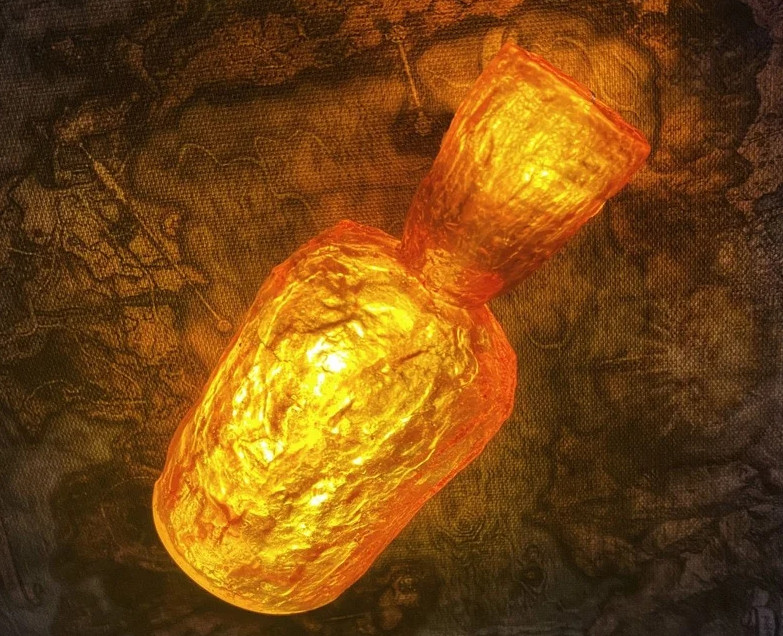

Estus Flask

Refilles your health points.
"The Undead treasure these dull green flasks. Fill with Estus at bonfires, and drink to restore HP. The journey of an Undead has always traced the bonfires, and no journey of import has been made without an Estus Flask."
Ingredients:
- 2 ½ cups of orange juice
- 1 mango, sliced
- 4 slices of pineapple
- ground cinnamon
- ½ cup of sparkling wine (per serving)
- a flask
Instructions:
- Place the chopped fruit into a blender and blend until smooth.
- Add the orange juice and blend until combined.
- Stir in sparkling wine and ground cinnamon.
- Pour the mixture into flask and enjoy!
Return to Recipes